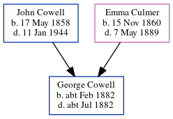

Emma Jane Cowell cFeb 1883 - c1883
[ Home ] | [ Calendar ] | [ Surnames Index ] | [ Errors ] | [ Family History ]The child of John Cowell (a farm waggoner) and Emma Culmer, Emma Cowell, the great-aunt of Nigel Horne, was born in Thanet, Kent, England c. Feb 18831,2,3 and baptised in Minster, Thanet, Kent, England on 3 Feb 1883.
She died c. May 1883 in Thanet2 and was buried at St Mary The Virgin Church, Minster in Thanet on 3 Jul 18834,5.
Parents
- John was born on 17 May 1858
- Emma was born on 15 Nov 1860
Citations
- England & Wales births 1837-2006 - Findmypast
- England & Wales deaths 1837-2007 - Findmypast
- Kent Burials - Findmypast
- Kent Burials - Findmypast
- England Deaths & Burials 1538-1991 - Findmypast
Media
England Births & Baptisms 1538-1975 - R_884575296
Kent Baptisms - GBPRS/CANT/B/96511951
England & Wales births 1837-2006 - BMD/B/1883/1/AZ/000132/166
England & Wales deaths 1837-2007 - BMD/D/1883/2/AZ/000078/168
England Births & Baptisms 1538-1975 - R_938002772
Kent Burials - GBPRS/CANT/D/95349321
England Deaths & Burials 1538-1991 - R_276551633
Family Tree
Map
Generated by ged2site. Last updated on Jul 3, 2024